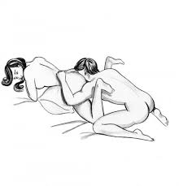

The purpose of this website is too explain different sex positions in a respectful way. This is a non scholar or phD opinion on the best positions by a practicioner. Enjoy the information on this single page website and we hope you learn something from it.

What is your favorite position - Do you Experiment
Education around intimacy and sex is crucial for developing healthy, consensual, and fulfilling relationships. Understanding the various aspects of sexual exploration, including different positions, can enhance both physical pleasure and emotional connection between partners. Experimenting with different positions allows couples to discover what works best for their bodies and fosters communication and trust. It also offers an opportunity to learn about comfort, mutual satisfaction, and the emotional intimacy that comes from being open to trying new things. The key to a positive experience is always mutual consent, communication, and respect for boundaries, ensuring that both partners feel safe and valued in their exploration.
Missionary is often considered the most common sex position due to its simplicity and intimacy. It involves one partner lying on their back while the other lies on top, facing them. This position allows for face-to-face contact, which can foster emotional connection, eye contact, and kissing, contributing to a sense of closeness. Its accessibility and comfort make it a go-to choice for many couples, especially when intimacy and connection are prioritized over physical complexity. Though it's frequently seen as a traditional or basic position, missionary can still offer a satisfying experience, and with slight variations, it can be adapted to suit different preferences and needs, proving its versatility.
Exploration in a sexual relationship allows partners to better understand each other’s bodies, preferences, and desires. Everyone experiences physical pleasure differently, and what works for one couple may not work for another. By experimenting with a variety of positions, couples can identify what offers the most satisfaction, both physically and emotionally.
Trying new sex positions naturally opens up conversations about what feels good, what doesn’t, and what could be improved. This communication can lead to a more open and trusting relationship. When couples feel safe discussing their preferences, they are more likely to meet each other’s needs, leading to more fulfilling experiences.
Trying something new—even a small change like adjusting angles or tempo—can reignite passion and build anticipation. When both partners are invested in exploration, it reinforces the idea that sexual connection is a shared, evolving journey.
Different positions also offer varied sensations: some focus on external stimulation, others on depth, rhythm, or closeness. By being open to trying new things, couples can better understand what truly brings pleasure to each partner—not just what’s considered “normal” or “standard.” It’s easy for sex to become routine in long-term relationships. While consistency can be comforting, too much predictability may lead to boredom or disengagement. Incorporating new sex positions keeps the sexual relationship dynamic and evolving.
Quote, "Sex positions are not for the bes but male and female exotic dancers simulate them professionally to the audience so they are entertained."
Encourage readers to explore related educational resources or contact a certified professional for more guidance.
Get in TouchWe respect your privacy and are committed to protecting any personal information you may provide while using this website. This site does not collect personal data unless explicitly submitted through a contact form or similar feature. Any information you share will be used solely to respond to your inquiry and will not be sold, shared, or used for marketing without your consent. By using this site, you agree to this policy. If you have any questions, please contact us directly.